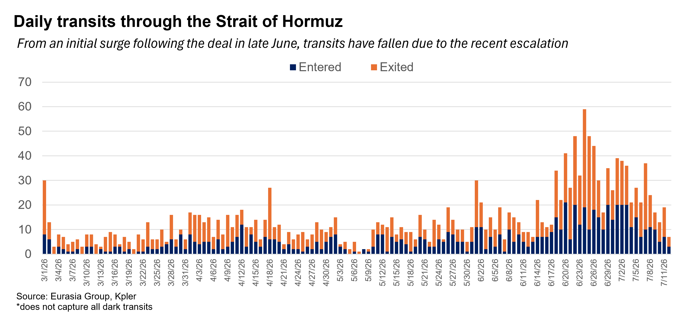

|
 |
|||
|
||||
What happened:Following repeated Iranian attacks on ships, US President Donald Trump announced that the US would resume its blockade on Iran. Our take:Shaky peace established by the June deal has ended. The US and Iran have both adopted more aggressive postures, with Iran attacking any ships that attempt to move through the Strait of Hormuz without its consent, while the US responds with kinetic strikes on targets in Iran and the resumption of the naval blockade. The shaky peace that came together following the deal in June (see: Skirmishing will continue as Iran pushes its luck in Hormuz, 8 July 2026) and that Eurasia Group expected would continue through the end of the year, has effectively collapsed. While the US is currently unlikely to resume large-scale bombing of Iran along the lines of the war in March, the environment will discourage shipping in the strait of Hormuz: Eurasia Group expects the volume to fall from 30-50% of prewar flows to 5-15% until both sides de-escalate. Oil prices will trade in a higher range of $75-95 due to the disruption (see: Crude prices will rise as US resumes blockade, 13 July 2026). Rapid de-escalation appears unlikely, given how both sides have committed to their positions, and an environment of heightened tensions and depressed Hormuz traffic is likely to endure through July. US will maintain blockade and respond to Iranian attacks on ships but is unlikely to escalate further. The current US objective is opening the strait and deterring Iranian efforts to disrupt traffic or exert more permanent influence over the waterway. US action is likely to be restricted to maintaining the blockade on Iranian maritime traffic, protecting ships that attempt to move through the strait via the Omani route, and bombing Iran in response to any attacks on shipping, with strikes concentrated on military targets rather than civilian infrastructure (as the latter would draw more intense Iranian retaliation in the Gulf). It is unlikely the US attempts to impose a toll on non-Iranian traffic moving through the strait (see: Graham's death matters most for Ukraine and Israel, 13 July 2026). Escalation risk runs through Iran, which remains emboldened. Iran’s ultimate goal is a new status quo in the strait, one where it’s influence over traffic is recognized. It also intends to collect revenue, in some form, from its position in the strait. US strikes on military targets in Iran, and even the reimposition of the blockade, is likely viewed as an acceptable cost to ultimately realizing this ambition—the regime leadership’s pain tolerance and willingness to tolerate risks remains high (see: New Iranian government will be risk-acceptant, 13 April 2026). Thus, it is unlikely Iran backs down in response to increased US pressure. Instead, Iran will continue its attacks on ships, while maintaining heavy pressure on Oman and the rest of the Gulf states to accede to its demands for permanent influence in the strait. To pressure US, Iran may escalate against Gulf energy or expand blockade to include Red Sea. Though neither side is likely to restart full-scale hostilities, Iran’s interest in forcing the US to de-escalate creates a potent risk that it escalates against either regional energy infrastructure or shipping the Red Sea. Doing so would greatly increase economic pressure, as oil flows would be further constricted and prices would likely increase (see: Airport strike raises risk of Houthi actions targeting Saudi energy, 13 July 2026).
 |